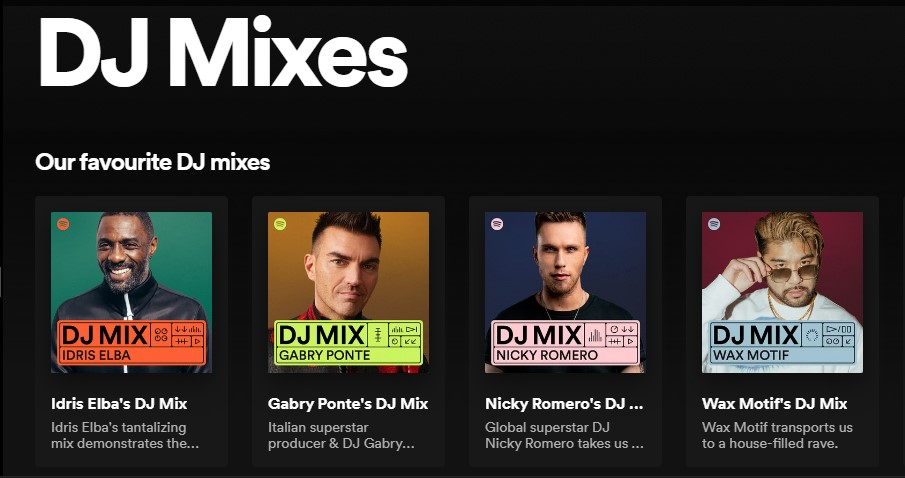

¿Qué es?
Es un concepto clave en el desarrollo de sitios web. En muchos casos, nuestras páginas son la representación de nuestra empresa, por lo que el diseño debe orientarse, al menos en parte, por la información de quienes utilizarán nuestra página o producto. Por esta razón, este enfoque debe aplicarse desde el momento en que el usuario entra en la página hasta que la abandona. La metodología de Diseño Centrado en el Usuario (DCU) emplea diversas técnicas de investigación y diseño que facilitan la creación de un sitio web accesible y fácil de usar.
Etapas del Diseño Centrado en el Usuario
Crear las soluciones
Desarrollan soluciones adaptadas a las necesidades de los usuarios, teniendo en cuenta los objetivos de la empresa. Dado que es imposible cumplir con las expectativas de todos, es crucial identificar cuáles soluciones atenderán las necesidades de la mayoría. Esta etapa incluye la creación de prototipos, wireframes y mockups que muestran la apariencia y el funcionamiento del sitio web.
Métodos para diseñar soluciones:
Convocar al equipo de diseño y a otros interesados para generar ideas y soluciones.
Crear wireframes que muestren la estructura fundamental del sitio para mejorar su organización.
Establecer una guía de estilos que abarque tipografía, colores y otros elementos visuales.
Realizar pruebas de usabilidad para identificar posibles problemas en el diseño.
Datos sobre el contexto del usuario:
Esta etapa consiste en empatizar con los usuarios y comprender a fondo sus circunstancias, necesidades y comportamientos al interactuar con el sitio web. Al entender el contexto del usuario, se puede diseñar un sitio que no solo sea funcional y eficiente, sino también intuitivo y placentero de usar, adaptándose a las necesidades y situaciones específicas de cada usuario.
Aspectos para entender el contexto de usuario:
Identificar las tareas que los usuarios quieren llevar a cabo en el sitio y sus objetivos finales.
Tener en cuenta las variaciones culturales y lingüísticas que pueden influir en la comprensión y utilización del sitio.
Considerar las restricciones de conexión a Internet que pueden impactar la experiencia del usuario.
Evaluar los resultados
En esta fase, se evalúa cuán bien el diseño de la página aborda las necesidades y requisitos de los usuarios. Aquí entra en juego el concepto de iteración, que implica que, según si los resultados son satisfactorios o no, los desarrolladores pueden repetir las etapas anteriores hasta que estén satisfechos o hasta que se cumplan las expectativas de los usuarios.
Pasos para evaluar los resultados:
Definir los elementos del sitio que serán evaluados.
Ejecutar pruebas controladas y observar cómo interactúan los usuarios con el sitio web, registrando sus acciones.
Clasificar los problemas encontrados e implementar los cambios necesarios para resolverlos.
Verificar que las mejoras realizadas han solucionado los inconvenientes.
Especificar los requerimientos del usuario
Define qué necesita el sitio web para satisfacer las necesidades y expectativas de los usuarios. Especificar los requerimientos del usuario de manera clara y detallada es esencial para guiar el diseño y desarrollo del sitio web, asegurando que cumpla con las expectativas y necesidades de los usuarios finales.
Pasos para especificar los requerimientos del usuario:
Llevar a cabo entrevistas y encuestas con los usuarios para comprender sus necesidades y deseos.
Organizar y clasificar los datos recopilados para identificar patrones y temas recurrentes.
Definir las características y funcionalidades que el sitio web debe incluir para satisfacer las necesidades de los usuarios.
Beneficios
Reducción de costos: Al detectar y solucionar problemas en el diseño de nuestra página web desde el principio, se disminuyen los costos potenciales de cambios futuros y se reduce la necesidad de soporte técnico.
Experiencia del cliente optimizada:Al fundamentar nuestra página en las opiniones y necesidades de los usuarios, logramos crear un sitio más intuitivo y fácil de navegar, lo que enriquece la experiencia del usuario al interactuar con el producto.
Incremento en la lealtad del usuario:Al diseñar nuestras páginas según las necesidades de los clientes, promovemos la fidelidad a la marca y aumentamos la probabilidad de que los usuarios vuelvan a visitar nuestro sitio.
Casos
1. Waze
La navegación GPS paso a paso existe desde 1995, y hoy en día casi todos tienen acceso a ella a través de sus teléfonos inteligentes, especialmente con Google Maps. Esta aplicación ha revolucionado la manera en que las personas se desplazan al centrarse en el usuario, permitiéndoles encontrar rápidamente la ruta más eficiente para llegar a su destino. Waze, en cambio, tiene un enfoque diferente. Al principio, parece una aplicación de navegación común: ingresas tu destino y te indica cómo llegar.
2. Spotify 
La personalización es un aspecto clave en la experiencia de usuario de Spotify.
Spotify crea cada día listas de reproducción conocidas como "Mix diarios", que incluyen las canciones que el usuario ha escuchado con mayor frecuencia, junto con nuevas sugerencias seleccionadas por un algoritmo de aprendizaje automático, el cual se basa en los hábitos de escucha del usuario.
3. Nintendo 
Esta marca japonesa se ha destacado por crear productos centrados en el usuario. Aunque sus personajes y paisajes son encantadores desde el primer momento en que se juega, su verdadera fortaleza radica en la usabilidad. Los controles y la interfaz de sus consolas son tan intuitivos que muchos niños logran aprender a jugar antes incluso de dominar la escritura en su propio idioma.